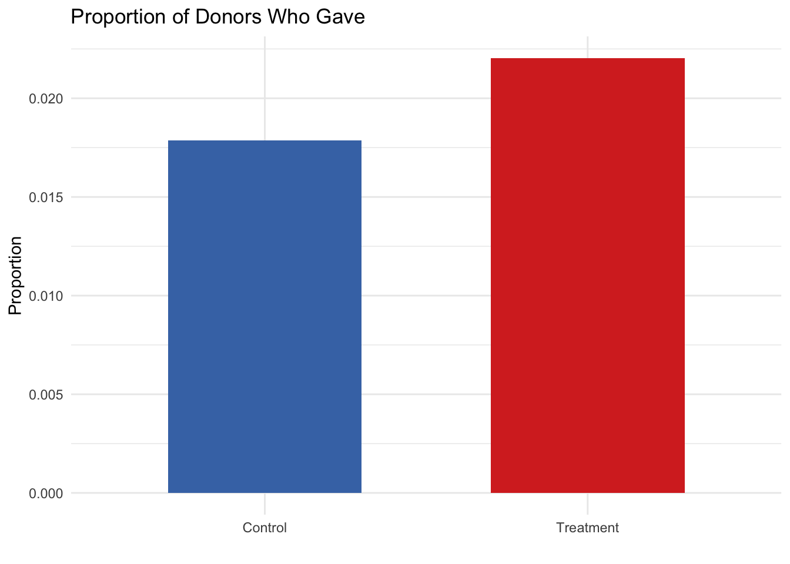
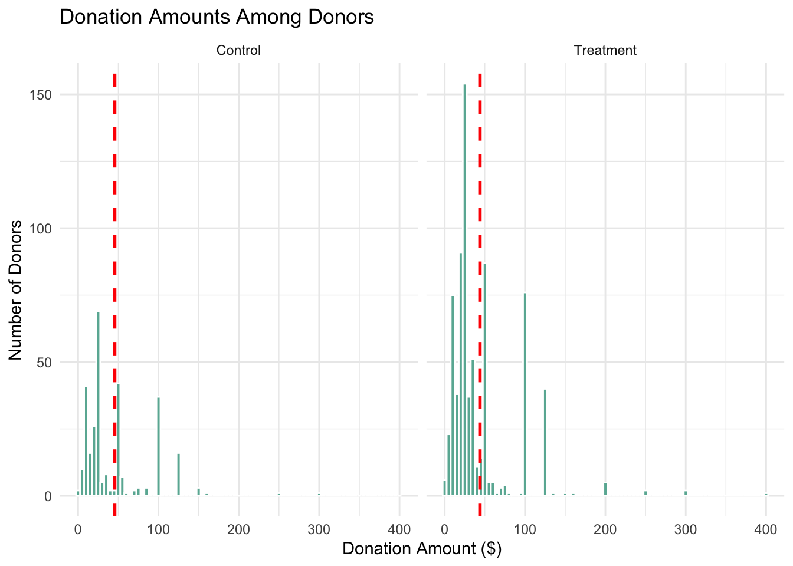
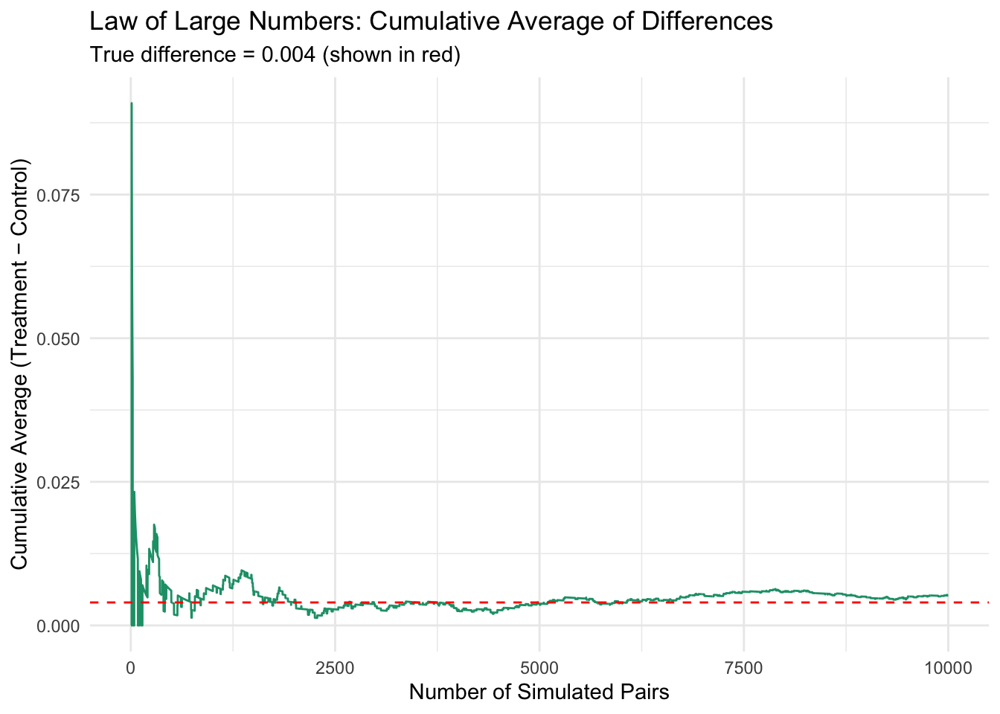
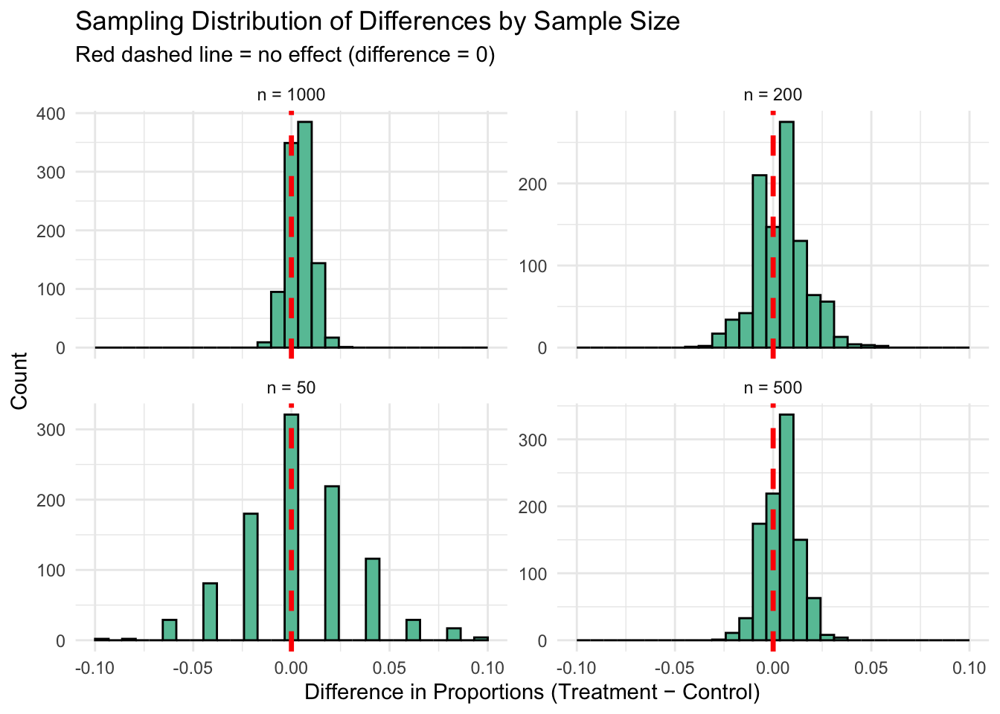

library(haven)
data <- read_dta("/Users/amansharma/amn_website/amn_website/blog/project3/karlan_list_2007.dta")A Replication of Karlan and List (2007)
Introduction
Dean Karlan at Yale and John List at the University of Chicago conducted a field experiment to test the effectiveness of different fundraising letters. They sent out 50,000 fundraising letters to potential donors, randomly assigning each letter to one of three treatments: a standard letter, a matching grant letter, or a challenge grant letter. They published the results of this experiment in the American Economic Review in 2007. The article and supporting data are available from the AEA website and from Innovations for Poverty Action as part of Harvard’s Dataverse.
to do: expand on the description of the experiment.
This project seeks to replicate their results.
Data
Balance Test
As an ad hoc test of the randomization mechanism, I provide a series of tests that compare aspects of the treatment and control groups to assess whether they are statistically significantly different from one another.
library(dplyr)
library(broom)
# Split data
treat <- filter(data, treatment == 1)
control <- filter(data, treatment == 0)# Variable 1: Months since last donation (mrm2)
mean_diff_mrm2 <- mean(treat$mrm2, na.rm = TRUE) - mean(control$mrm2, na.rm = TRUE)
se_mrm2 <- sqrt(var(treat$mrm2, na.rm = TRUE)/nrow(treat) +
var(control$mrm2, na.rm = TRUE)/nrow(control))
t_stat_mrm2 <- mean_diff_mrm2 / se_mrm2# Variable 2: Highest previous contribution (hpa)
mean_diff_hpa <- mean(treat$hpa, na.rm = TRUE) - mean(control$hpa, na.rm = TRUE)
se_hpa <- sqrt(var(treat$hpa, na.rm = TRUE)/nrow(treat) +
var(control$hpa, na.rm = TRUE)/nrow(control))
t_stat_hpa <- mean_diff_hpa / se_hpa# Display t-stats
t_stat_mrm2[1] 0.1195321t_stat_hpa[1] 0.97043# Regress mrm2 (months since last donation) on treatment
model_mrm2 <- lm(mrm2 ~ treatment, data = data)
tidy(model_mrm2)# A tibble: 2 × 5
term estimate std.error statistic p.value
<chr> <dbl> <dbl> <dbl> <dbl>
1 (Intercept) 13.0 0.0935 139. 0
2 treatment 0.0137 0.115 0.119 0.905# Regress hpa (highest previous contribution) on treatment
model_hpa <- lm(hpa ~ treatment, data = data)
tidy(model_hpa)# A tibble: 2 × 5
term estimate std.error statistic p.value
<chr> <dbl> <dbl> <dbl> <dbl>
1 (Intercept) 59.0 0.551 107. 0
2 treatment 0.637 0.675 0.944 0.345Experimental Results
Charitable Contribution Made
First, I analyze whether matched donations lead to an increased response rate of making a donation.
library(ggplot2)# Create proportion data
response_rate <- data %>%
group_by(treatment) %>%
summarise(prop_gave = mean(gave)) %>%
mutate(group = ifelse(treatment == 1, "Treatment", "Control"))# Plot
ggplot(response_rate, aes(x = group, y = prop_gave, fill = group)) +
geom_col(width = 0.6, show.legend = FALSE) +
labs(
title = "Proportion of Donors Who Gave",
x = "",
y = "Proportion"
) +
scale_fill_manual(values = c("#4575b4", "#d73027")) +
theme_minimal()
# T-test (manual)
treat_gave <- filter(data, treatment == 1)$gave
control_gave <- filter(data, treatment == 0)$gave
mean_diff <- mean(treat_gave) - mean(control_gave)
se <- sqrt(var(treat_gave)/length(treat_gave) + var(control_gave)/length(control_gave))
t_stat <- mean_diff / se# Show t-statistic
t_stat[1] 3.209462# OLS regression: gave ~ treatment
ols_model <- lm(gave ~ treatment, data = data)
summary(ols_model)
Call:
lm(formula = gave ~ treatment, data = data)
Residuals:
Min 1Q Median 3Q Max
-0.02204 -0.02204 -0.02204 -0.01786 0.98214
Coefficients:
Estimate Std. Error t value Pr(>|t|)
(Intercept) 0.017858 0.001101 16.225 < 2e-16 ***
treatment 0.004180 0.001348 3.101 0.00193 **
---
Signif. codes: 0 '***' 0.001 '**' 0.01 '*' 0.05 '.' 0.1 ' ' 1
Residual standard error: 0.1422 on 50081 degrees of freedom
Multiple R-squared: 0.000192, Adjusted R-squared: 0.0001721
F-statistic: 9.618 on 1 and 50081 DF, p-value: 0.001927# Probit model
probit_model <- glm(gave ~ treatment, data = data, family = binomial(link = "probit"))
summary(probit_model)
Call:
glm(formula = gave ~ treatment, family = binomial(link = "probit"),
data = data)
Coefficients:
Estimate Std. Error z value Pr(>|z|)
(Intercept) -2.10014 0.02332 -90.074 < 2e-16 ***
treatment 0.08678 0.02788 3.113 0.00185 **
---
Signif. codes: 0 '***' 0.001 '**' 0.01 '*' 0.05 '.' 0.1 ' ' 1
(Dispersion parameter for binomial family taken to be 1)
Null deviance: 10071 on 50082 degrees of freedom
Residual deviance: 10061 on 50081 degrees of freedom
AIC: 10065
Number of Fisher Scoring iterations: 6Differences between Match Rates
Next, I assess the effectiveness of different sizes of matched donations on the response rate.
# Only include treated individuals (match group)
match_data <- filter(data, treatment == 1)
# Subset by match ratio
r1 <- filter(match_data, ratio == 1)$gave
r2 <- filter(match_data, ratio == 2)$gave
r3 <- filter(match_data, ratio == 3)$gave
# 1:1 vs 2:1
t_stat_r1_r2 <- (mean(r2) - mean(r1)) / sqrt(var(r2)/length(r2) + var(r1)/length(r1))
# 2:1 vs 3:1
t_stat_r2_r3 <- (mean(r3) - mean(r2)) / sqrt(var(r3)/length(r3) + var(r2)/length(r2))
# Output
t_stat_r1_r2[1] 0.965049t_stat_r2_r3[1] 0.05011581This is even closer to zero, showing almost no difference between the 2:1 and 3:1 match rates.
# Create dummy for 1:1 match (reference category)
match_data <- match_data %>%
mutate(
ratio1 = ifelse(ratio == 1, 1, 0),
ratio2 = ifelse(ratio == 2, 1, 0),
ratio3 = ifelse(ratio == 3, 1, 0)
)
# Regression using dummy variables
model_ratios <- lm(gave ~ ratio2 + ratio3, data = match_data)
summary(model_ratios)
Call:
lm(formula = gave ~ ratio2 + ratio3, data = match_data)
Residuals:
Min 1Q Median 3Q Max
-0.02273 -0.02273 -0.02263 -0.02075 0.97925
Coefficients:
Estimate Std. Error t value Pr(>|t|)
(Intercept) 0.020749 0.001391 14.912 <2e-16 ***
ratio2 0.001884 0.001968 0.958 0.338
ratio3 0.001984 0.001968 1.008 0.313
---
Signif. codes: 0 '***' 0.001 '**' 0.01 '*' 0.05 '.' 0.1 ' ' 1
Residual standard error: 0.1468 on 33393 degrees of freedom
Multiple R-squared: 3.865e-05, Adjusted R-squared: -2.124e-05
F-statistic: 0.6454 on 2 and 33393 DF, p-value: 0.5245# Alternative: regression using ratio as a factor
model_factor <- lm(gave ~ factor(ratio), data = match_data)
summary(model_factor)
Call:
lm(formula = gave ~ factor(ratio), data = match_data)
Residuals:
Min 1Q Median 3Q Max
-0.02273 -0.02273 -0.02263 -0.02075 0.97925
Coefficients:
Estimate Std. Error t value Pr(>|t|)
(Intercept) 0.020749 0.001391 14.912 <2e-16 ***
factor(ratio)2 0.001884 0.001968 0.958 0.338
factor(ratio)3 0.001984 0.001968 1.008 0.313
---
Signif. codes: 0 '***' 0.001 '**' 0.01 '*' 0.05 '.' 0.1 ' ' 1
Residual standard error: 0.1468 on 33393 degrees of freedom
Multiple R-squared: 3.865e-05, Adjusted R-squared: -2.124e-05
F-statistic: 0.6454 on 2 and 33393 DF, p-value: 0.5245# Subset only the treatment group
match_data <- filter(data, treatment == 1)
# Create readable match ratio labels
match_data <- match_data %>%
mutate(ratio_group = case_when(
ratio2 == 1 ~ "2:1",
ratio3 == 1 ~ "3:1",
TRUE ~ "1:1"
))
# Compute response rates
response_rates <- match_data %>%
group_by(ratio_group) %>%
summarise(response_rate = mean(gave))
response_rates# A tibble: 3 × 2
ratio_group response_rate
<chr> <dbl>
1 1:1 0.0207
2 2:1 0.0226
3 3:1 0.0227Size of Charitable Contribution
In this subsection, I analyze the effect of the size of matched donation on the size of the charitable contribution.
# T-test
t.test(amount ~ treatment, data = data)
Welch Two Sample t-test
data: amount by treatment
t = -1.9183, df = 36216, p-value = 0.05509
alternative hypothesis: true difference in means between group 0 and group 1 is not equal to 0
95 percent confidence interval:
-0.310555423 0.003344493
sample estimates:
mean in group 0 mean in group 1
0.8132678 0.9668733 # OLS regression
model_uncond <- lm(amount ~ treatment, data = data)
summary(model_uncond)
Call:
lm(formula = amount ~ treatment, data = data)
Residuals:
Min 1Q Median 3Q Max
-0.97 -0.97 -0.97 -0.81 399.03
Coefficients:
Estimate Std. Error t value Pr(>|t|)
(Intercept) 0.81327 0.06742 12.063 <2e-16 ***
treatment 0.15361 0.08256 1.861 0.0628 .
---
Signif. codes: 0 '***' 0.001 '**' 0.01 '*' 0.05 '.' 0.1 ' ' 1
Residual standard error: 8.709 on 50081 degrees of freedom
Multiple R-squared: 6.911e-05, Adjusted R-squared: 4.915e-05
F-statistic: 3.461 on 1 and 50081 DF, p-value: 0.06282# Filter to donors only
donors <- filter(data, gave == 1)
# T-test
t.test(amount ~ treatment, data = donors)
Welch Two Sample t-test
data: amount by treatment
t = 0.58461, df = 557.46, p-value = 0.559
alternative hypothesis: true difference in means between group 0 and group 1 is not equal to 0
95 percent confidence interval:
-3.937240 7.274027
sample estimates:
mean in group 0 mean in group 1
45.54027 43.87188 # Regression
model_cond <- lm(amount ~ treatment, data = donors)
summary(model_cond)
Call:
lm(formula = amount ~ treatment, data = donors)
Residuals:
Min 1Q Median 3Q Max
-43.54 -23.87 -18.87 6.13 356.13
Coefficients:
Estimate Std. Error t value Pr(>|t|)
(Intercept) 45.540 2.423 18.792 <2e-16 ***
treatment -1.668 2.872 -0.581 0.561
---
Signif. codes: 0 '***' 0.001 '**' 0.01 '*' 0.05 '.' 0.1 ' ' 1
Residual standard error: 41.83 on 1032 degrees of freedom
Multiple R-squared: 0.0003268, Adjusted R-squared: -0.0006419
F-statistic: 0.3374 on 1 and 1032 DF, p-value: 0.5615library(ggplot2)
# Add group label
donors <- donors %>%
mutate(group = ifelse(treatment == 1, "Treatment", "Control"))
# Group means for vertical lines
means <- donors %>%
group_by(group) %>%
summarise(mean_amount = mean(amount))
# Plot
ggplot(donors, aes(x = amount)) +
geom_histogram(binwidth = 5, fill = "#69b3a2", color = "white") +
geom_vline(data = means, aes(xintercept = mean_amount), color = "red", linetype = "dashed", size = 1) +
facet_wrap(~group) +
labs(
title = "Donation Amounts Among Donors",
x = "Donation Amount ($)",
y = "Number of Donors"
) +
theme_minimal()Warning: Using `size` aesthetic for lines was deprecated in ggplot2 3.4.0.
ℹ Please use `linewidth` instead.
Simulation Experiment
As a reminder of how the t-statistic “works,” in this section I use simulation to demonstrate the Law of Large Numbers and the Central Limit Theorem.
Suppose the true distribution of respondents who do not get a charitable donation match is Bernoulli with probability p=0.018 that a donation is made.
Further suppose that the true distribution of respondents who do get a charitable donation match of any size is Bernoulli with probability p=0.022 that a donation is made.
Law of Large Numbers
set.seed(123)
# Step 1: Simulate draws
control_draws <- rbinom(100000, 1, 0.018) # 100,000 draws from control (p = 0.018)
treat_draws <- rbinom(10000, 1, 0.022) # 10,000 draws from treatment (p = 0.022)
# Step 2: Take first 10,000 of each for comparison
control_sample <- control_draws[1:10000]
treat_sample <- treat_draws[1:10000]
# Step 3: Calculate difference vector
diff_vector <- treat_sample - control_sample # element-wise difference
# Step 4: Cumulative average of differences
cum_avg <- cumsum(diff_vector) / seq_along(diff_vector)
# Step 5: Plot cumulative average
library(ggplot2)
ggplot(data.frame(n = 1:10000, cum_avg = cum_avg), aes(x = n, y = cum_avg)) +
geom_line(color = "#1b9e77") +
geom_hline(yintercept = 0.004, linetype = "dashed", color = "red") +
labs(
title = "Law of Large Numbers: Cumulative Average of Differences",
subtitle = "True difference = 0.004 (shown in red)",
x = "Number of Simulated Pairs",
y = "Cumulative Average (Treatment − Control)"
) +
theme_minimal()
Central Limit Theorem
set.seed(123)
# Parameters
p_control <- 0.018
p_treat <- 0.022
n_sims <- 1000
sample_sizes <- c(50, 200, 500, 1000)
# Load plotting library
library(ggplot2)
library(dplyr)
library(tidyr)
library(purrr)
# Simulate for each sample size
simulate_diffs <- function(n) {
replicate(n_sims, {
control <- rbinom(n, 1, p_control)
treatment <- rbinom(n, 1, p_treat)
mean(treatment) - mean(control)
})
}
# Generate data for all sample sizes
sim_results <- map_dfr(sample_sizes, function(n) {
data.frame(
diff = simulate_diffs(n),
n = paste0("n = ", n)
)
})
# Plot histograms
ggplot(sim_results, aes(x = diff)) +
geom_histogram(bins = 30, fill = "#66c2a5", color = "black") +
geom_vline(xintercept = 0, color = "red", linetype = "dashed", linewidth = 1.2) +
facet_wrap(~n, scales = "free_y") +
labs(
title = "Sampling Distribution of Differences by Sample Size",
subtitle = "Red dashed line = no effect (difference = 0)",
x = "Difference in Proportions (Treatment − Control)",
y = "Count"
) +
theme_minimal()